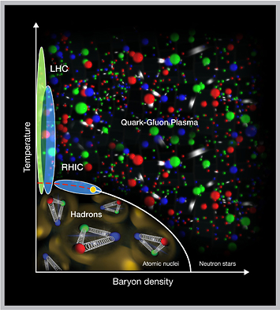

The Lattice Quantum Chromo-Dynamics (LQCD) SciDAC-4 Project is supported by the U.S. Dept. of Energy Office of Nuclear Physics and the Office of Advanced Scientific Computing Research. The project is supporting the development of the software infrastructure to carry out scientific calculations to address fundamental questions in nuclear science. It is a collaboration of domain scientists, and computer scientists which aims to understand the structure of nuclear matter under extreme conditions, and how quarks and gluons are confined to build the matter that is observed in nature.
Exploring the Exotic World of Quarks and Gluons at the Dawn of the Exascale
Jefferson Lab Highlights, 2017-10-11
|
|
|  |
Using Supercomputers to Delve Ever Deeper into the Building Blocks of Matter
Brookhaven National Lab Features, 2017-10-18
|